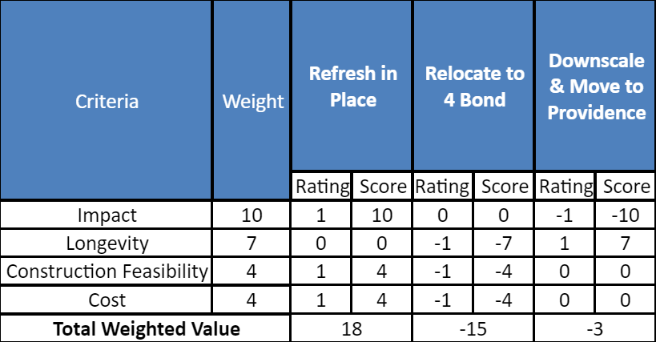
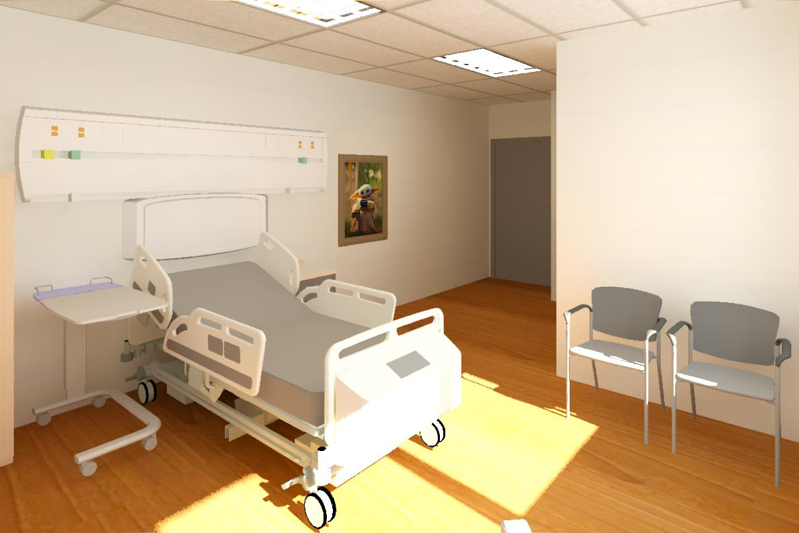
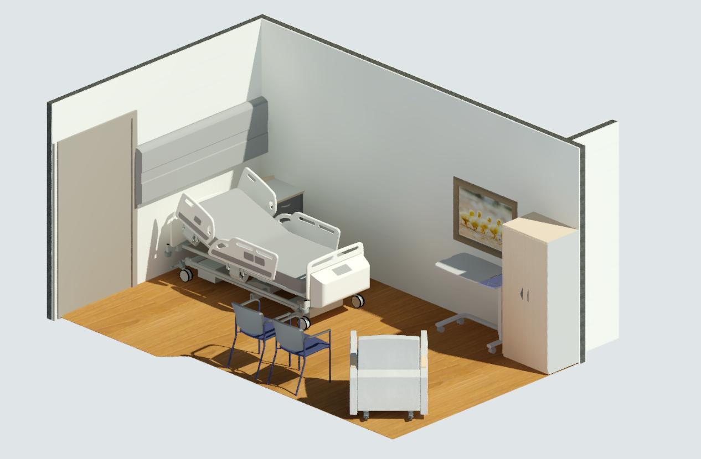
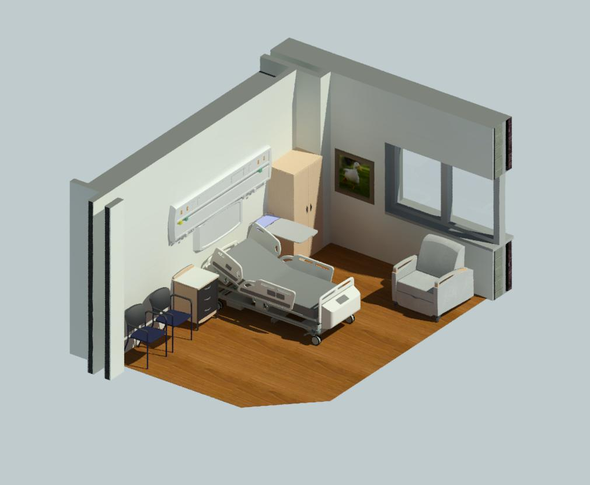

| Company | Role | Skills |
|---|---|---|
| St. Michael's Hospital | Project Engineer | Project Management |
| Competitive Analysis | ||
| Project Roadmapping |
Accounting for factors such as the impact on patients, solution longevity, construction feasibility, and cost, I proposed a multi-million dollar project to renovate the Palliative Care Unit to the St. Michael’s Hospital Planning department. I conducted a competitive analysis and aggregated data which allowed me to recommend a course of action that would benefit Palliative Care Unit patients and their visitors for years to come.
St. Michael’s Hospital is a large teaching and research hospital, covering over 1.5 million square feet in the heart of downtown Toronto. Affectionately known as the Urban Angel, St. Michael’s is renowned for providing exceptional patient care and being one of Canada’s most prominent teaching hospitals and research centres.
Despite being one of the oldest hospitals in Toronto, St. Michael’s heavily invests in staying up-to-date with everything healthcare, technology, and construction-related. As part of this, the Redevelopment team in the Planning Department works directly with physicians, engineering consultants, and architectural firms for all expansion and renovation projects. I was fortunate enough to be able to work as a Project Engineer Co-op with the Redevelopment team in the Fall term of 2019.
Co-op students are always encouraged to seek and discover new initiatives that can be tackled and one of the ideas that I came up with was addressing the shortcomings of the incredibly crucial Palliative Care Unit.
The Palliative Care Unit (PCU) is for managing distressing symptoms such as pain, nausea, or difficulty breathing, and ensures comfort when a cure is no longer possible. To be admitted, patients and families must agree with a palliative plan of care, which means they have agreed to stop further active treatment, and a do-not-resuscitate status has been agreed upon. The patients typically have a life expectancy of three months or less, so this is a very sensitive unit.
The PCU at St. Michael’s Hospital has only 10 beds, with 6 being in shared double rooms, and 4 being in private rooms. This is significant because the latest Canadian hospital standards urge for all patients to be in private rooms. The PCU also offers a family lounge with a kitchen, dining area, library, quiet room, laundry facilities, and a patient shower.
A typical palliative care patient’s preferred setting for care is their home, but if unavailable, the hospital should be a close second. The PCU is outdated and fails to accommodate all the needs and wants of a patient and their visitor. After the latest hospital renovation project, the fourth floor of the Donnelly Wing, which includes the PCU, will be the only floor of the wing that has not been renovated.
This project was conceptualized because the PCU will have to temporarily relocate to the Bond Wing sometime in 2020 for half a year to completely redo the plumbing in the Donnelly Wing. The PCU would, unfortunately, be relocating to a significantly older and slightly smaller, but vacant, area of the hospital. The idea was to time any renovation work to fit within this mandatory but temporary relocation period. This would mean that we would welcome the patients back to a new and improved unit with minimal disruption to them and their families.
Just before my internship began, a generous donor committed to paying $120,000 to refresh the PCU by refurnishing it. However, I thought it would be a waste of resources to just renovate an aesthetic attribute of the PCU instead of taking advantage of the opportunity to make a substantial improvement to the patient experience.
After bringing up the idea of giving the PCU a more intensive revamp, the donor expressed interest in donating more money for the right plan. We had a prime opportunity in our hands, but we also needed to consider the constraints we were dealing with.
Since this project was occurring during a co-op work term, I faced the ever-present constraint of time. Being confined to a four-month work term, I was determined to at least get the attention and interest of some executives so that the project had a fighting chance to live on after my term came to an end.
The Canadian healthcare system is extremely valuable to Canadians and is very patient-centric. However, due to the nature of the public sector, hospitals don’t receive as much funding as we would like them to. This means we are severely limited in our budget for projects that we know would benefit our patients. Thus, we must rely on, and seek the attention of philanthropists to donate and fund our projects.
Due to the nature of being in the heart of downtown Toronto, there is physically no space that the hospital can expand to. The only way is up, but with the foundation of the building only being able to support a certain number of floors, we were completely boxed in.
As with any well-executed project, before moving on, we first needed to establish key performance metrics that we’d be considering and measuring with our final solution.
Clearly, as a hospital, the most important metric to consider is impact, which can be divided into impact on the patient/visitor, and impact on hospital staff.
Things to take into consideration would be how big the room is, the overall aesthetic of the unit, and the level of patient privacy. When two patients share a room and one passes away, this can create a very uncomfortable situation for the other patient and the deceased’s family. This conflicts with end-of-life best practices since death is a private family experience. Something else to consider would be the ease of access to the unit. Hopefully, the patient is getting visited frequently, and you would want the unit to be in a location that can be easily, but securely, accessed from the main hospital entrance.
For the staff, we would have to be mindful of their workflow. We have to keep in mind rooms dedicated to the staff, and the layout of the space so that nurses can complete their rounds conveniently.
For longevity, we would have to consider how long our solution can be in place. There are several questions we should ask ourselves. Can our solution be iterated upon in the future? Would it even need to be iterated upon? Would we need to conduct more relocations, or disrupt the clinic more in the future?
There are several construction aspects to think about. Just to name a few: sufficient air supply, patient relocation, fire safety requirements, satisfactory plumbing, construction timelines, and asbestos concerns. There’s a limit to the work that can realistically be done in a space, especially for a sensitive unit in an already-sensitive hospital environment.
At the end of the day, the PCU doesn’t need any state-of-the-art technology, breakthrough innovations, or the latest science. We just need a space that can provide patients with peace, quiet, and a sense of humanity in their last moments.
That being said, let’s get into the different solutions I came up with.
The first option is to renovate the unit’s current space in the Donnelly Wing while the PCU temporarily relocates. This would allow us to address some of the requests that have been made by the current clinical team, such as:
Now, if we measure it up against the performance metrics, this would involve some disturbance to the patients and families because it would involve moving the beds back and forth.
However, this final location in the Donnelly wing is a prime location for visitors, since it’s easily accessible from the main entrance.
This would also allow for the unit to keep all the same amenities they had before such as the convenient nursing station location, the family lounge, staff lounge, quiet room, patient shower, and laundry. The renovation would allow for an opportunity to shift rooms around, such as moving the laundry room into the staff lounge so that the laundry room can become a private physician touchdown space.
In terms of longevity, this would be a permanent solution, but I’ll get more into this later.
For construction feasibility, the air supply would be fine since there was a recent renewal. The plumbing would be renewed, and the new nurse call devices would be installed. We had already done renovations in the Donnelly wing before, so we generally knew what to look out for. When everyone clears out of Donnelly for the plumbing stack rework, this will make the construction feasibility go up since any units above or below the PCU would be unaffected by our construction noises. We would also need to put in sprinklers, which we can tap into Health Infrastructure Renewal Fund (HIRF) money for, and while we’re at it, redo the ceiling tiles as well.
One construction concern would be the asbestos in the drywall. But, we could use about 10k of the HIRF money to deal with this.
Based on the above, after getting an initial estimate from contractors, this work would cost approximately $1.5 - 2 million.
A second option would be to renovate the space in the Bond Wing that the PCU was originally only going to be in temporarily. This would be very beneficial from a Planning Department perspective because this frees up prime real estate in the Donnelly Wing as a swing space for future projects. This would work towards our vision of converting the Donnelly Wing to an ambulatory-only wing, but it would also work against our long-term goal of not having sleeping patients in the Bond Wing.
From a patient perspective, this would be less disruptive because it would only involve one move instead of two.
However, this inconveniences the visitors of the patients as the Bond Wing isn’t as accessible as the Donnelly Wing.
The space in the Bond Wing, while having 10 private patient rooms, has fewer rooms in total, which would mean the unit has to forgo some of the additional amenities they had before. This also changes the workflow of the clinical team since they would be in a new space with a different floor plan.
In terms of longevity, this would be a shorter solution than the first option because the entire Bond Wing is going to be demolished soon.
For construction feasibility, the Bond Wing does not have enough air supply, which is problematic. While this wouldn’t be a problem for a temporary measure, this would be a concern if we are looking into moving the unit semi-permanently. This would involve the installation of another air handling unit, which costs millions of dollars on its own, and would require space and resources we don’t have.
Additionally, we would need to change out the heating coils for the radiant heating panels and deal with a lot of asbestos, which costs a lot of money. We would also need to install sprinklers, new nurse call devices, and redo the plumbing.
For neighbouring units, the floors above and below are administrative staff, so the construction noises wouldn’t be a huge concern.
From all this, we can safely assume that option 2 would be a lot more expensive than option 1.
The third and final option is downscaling the Palliative Care Unit at St. Mike’s, moving it over to the Bond Wing, and redirecting most of our patients to our sister hospital, Providence Healthcare. Similar to option 2, this would also free up space in the Donnelly Wing to use as swing space, or to potentially make room for another clinic.
From a patient and family perspective, this would be highly disruptive. Taking into consideration the nature of the unit, moving patients from one hospital to another would be extremely stressful, and could kill the patients.
You may be thinking, palliative patients are transported all the time in ambulances, so what’s the difference? In most cases, when palliative patients are transported, they are being sent home so that they can pass peacefully, surrounded by their loved ones. Transporting patients simply because of our insufficiency as a hospital pales in comparison as a reason.
In terms of longevity, this would be a permanent and long-standing measure.
For construction feasibility at St. Mike’s, this would involve the same work as option 2, but at a smaller scale since there are fewer patient rooms required. The other existing patient rooms could be converted to rooms that require less-intensive construction, such as physician offices, quiet rooms, or multi-faith rooms.
For construction feasibility at Providence Healthcare, although Providence can already house 37 patients, this would not be sufficient in the long run, and construction would be inevitable. The first and second floors of their Palliative building is potential real estate that we could lightly renovate to provide services such as yoga, counselling, infusions, transfusions, and IV. The vastness of their Palliative building means that they can simply offer amenities that St. Michael’s doesn’t have space for, like a business center, or suites for visitors to sleep.
Compiling all the considerations above into a weighted decision matrix, we can mathematically find the objectively correct solution using subjective factors.
The recommendation I arrived at was to renovate the Donnelly Wing. This would minimize disruption, adhere to better patient care standards, and best accommodate staff and visitors.
By doing this work, we can send a strong message about the sacredness of life through improving the experience of our patients and their families. We have to remember that we are treating families, not just patients. The best place to do palliative care would be at home, but when that’s not an option, the hospital should be a close second.
We have some of the world’s best doctors, staff, and technology, so we should have the facilities to match. The appearance of our facilities instills confidence and we would want people to feel comfortable during their most difficult time.
For the interest of patient safety and privacy, I won’t be sharing the before photos or the finalized floor plans, but I have included below some final renderings of the space.
  As with any company, once there’s an idea, we can’t simply start building it out. This is especially true for the public sector, where you need executive buy-in. So, I compiled a presentation with all my research and analysis above and presented my recommendation with justification to everyone in the Planning Department and a few executives near the end of my term.
As I learned in my Product Management experience beforehand, doing a little bit of competitive analysis can always be useful. So, I reached out to several hospitals in the province that had recently revamped their PCUs and asked them for the data that they used to get buy-in for their projects and included these figures in my presentation as well.
Overall, I was met with positive feedback, so I have high hopes that I was able to make a positive impact on patients for years to come.
I would like to gratefully acknowledge Thomas Parker and the Redevelopment team at St. Michael’s Hospital. Their support, mentorship, and unwavering kindness in every interaction made my term extremely enjoyable and showed me how pleasant it could be working in the healthcare industry.
As a biomedical engineering student, I was naturally drawn to the position of a Project Engineer at a hospital, and I could not have made a better choice at that point in my life. Coming into work every day was incredibly fulfilling as I got to see and interact with patients as I benefited them in the short-term and long-term.
In four short months, I was fortunate enough to learn about and facilitate the intricate process behind keeping a hospital fully functional. I had the opportunity to take an idea, build it up to an actionable plan, and present it in front of executives who loved my data and passion.
"Nick's involvement in St. Michael's Hospital's projects was greatly appreciated by the Redevelopment team. His approach to project management mirrored that which would be expected from a full-time project manager.
Specficially, his strategic approach to looking for new projects and suggestions for future redevelopment priorities (i.e. Palliative Care) will be useful for the hospital for years to come.
His work will outlive his time at the hospital and he was a pleasure to work with. With continued development of his skills, there is no doubt that Nick will be successful in his career."